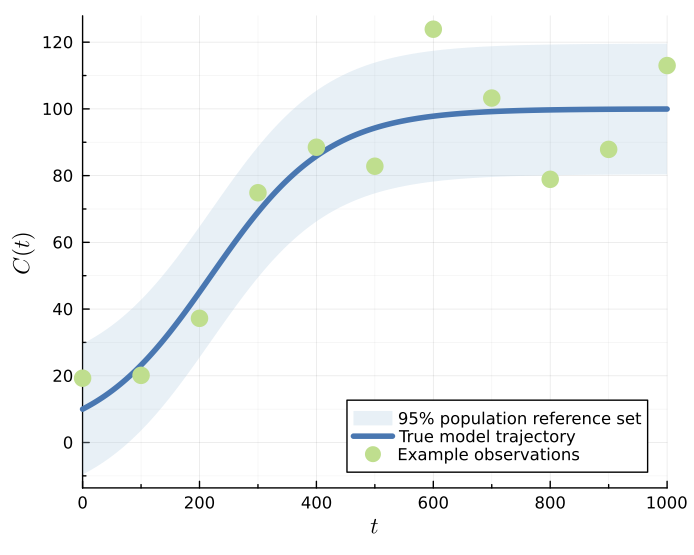
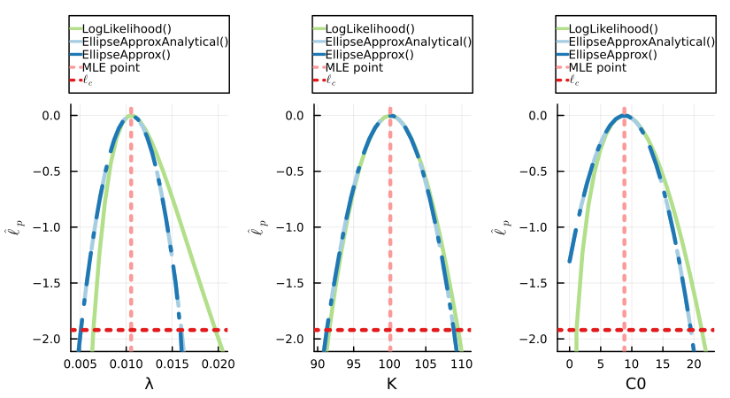
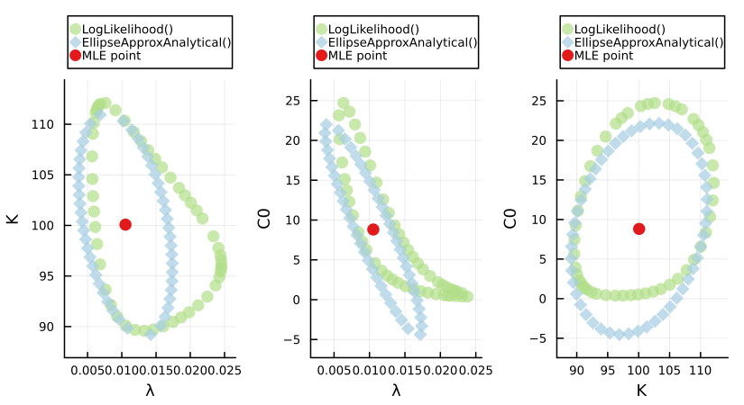
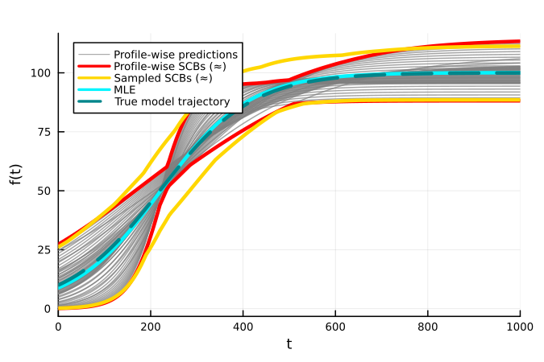
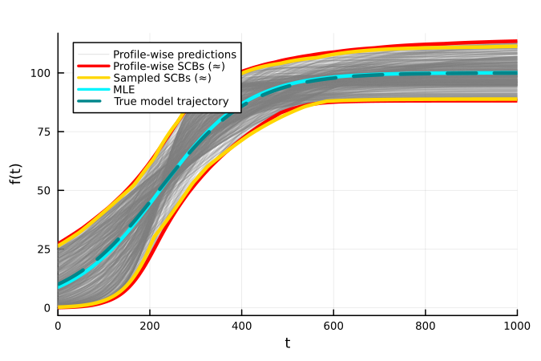
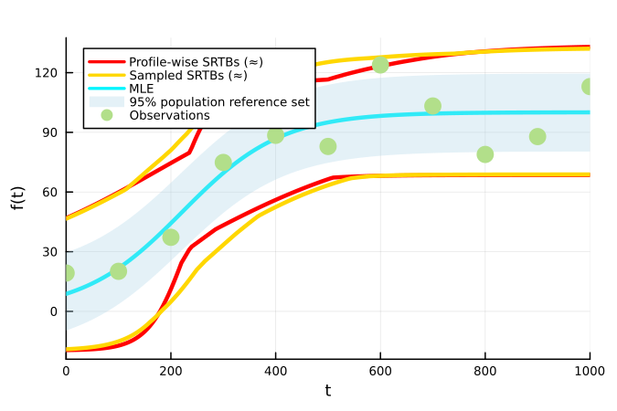
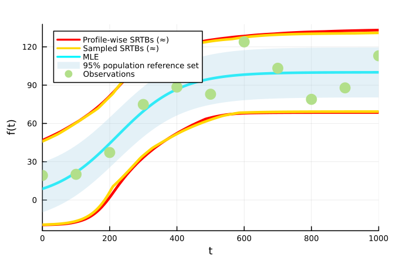

Logistic Model
The code included in this example is compiled into a single file here.
The logistic model with a normal data distribution [1] has the following differential equation for the population density $C(t)\geq0$:
\[\frac{\mathrm{d}C(t)}{\mathrm{d}t} = \lambda C(t) \Bigg[1-\frac{C(t)}{K}\Bigg],\]
where the model parameter vector is given by $\theta^M = (\lambda, K, C(0))$. The corresponding additive Gaussian data distribution, with a fixed standard deviation, has a density function for the observed data given by:
\[y_i \sim p(y_i ; \theta) \sim \mathcal{N}(z_i(\theta^M), \sigma^2),\]
where $z_i(\theta^M)=z(t_i; \theta^M)$ is the model solution of the first Equation at $t_i$ and $\sigma=10$.
The true parameter values are $\theta^M =(0.01, 100, 10)$. The corresponding lower and upper parameter bounds are $a = (0, 50, 0)$ and $b = (0.05,150,50)$. Observation times are $t_{1:I} = 0,100,200,...,1000$. The original implementation can be found at https://github.com/ProfMJSimpson/Workflow. Example realisations, the true model trajectory and 95% population reference set under this parameterisation can be seen in the figure below:

Initial Setup
Here we add three worker processes, which matches the number of univariate and bivariate profiles. For coverage testing we recommend setting this number as discussed in Import Package and Set Up Distributed Environment.
using Distributed
if nprocs()==1; addprocs(3, env=["JULIA_NUM_THREADS"=>"1"]) end
@everywhere using Random, Distributions
@everywhere using LikelihoodBasedProfileWiseAnalysis
using CombinatoricsModel and Likelihood Function Definition
@everywhere function solvedmodel(t, θ)
return (θ[2]*θ[3]) ./ ((θ[2]-θ[3]) .* (exp.(-θ[1] .* t)) .+ θ[3])
end
@everywhere function loglhood(θ, data)
y=solvedmodel(data.t, θ)
e=sum(loglikelihood(data.dist, data.y_obs .- y))
return e
endInitial Data and Parameter Definition
# true parameters
λ_true=0.01; K_true=100.0; C0_true=10.0; t=0:100:1000;
@everywhere global σ=10.0;
θ_true=[λ_true, K_true, C0_true]
y_true = solvedmodel(t, θ_true)
y_obs = [19.27, 20.14, 37.23, 74.87, 88.51, 82.91, 123.88, 103.25, 78.89, 87.87, 113.0]
# Named tuple of all data required within the log-likelihood function
data = (y_obs=y_obs, t=t, dist=Normal(0, σ))
# Bounds on model parameters
λ_min, λ_max = (0.00, 0.05)
K_min, K_max = (50., 150.)
C0_min, C0_max = (0.0, 50.)
lb = [λ_min, K_min, C0_min]
ub = [λ_max, K_max, C0_max]
θnames = [:λ, :K, :C0]
θG = θ_true
par_magnitudes = [0.005, 10, 10]LikelihoodModel Initialisation
Here we choose to set some optimization settings, opt_settings, which are used when determining the maximum likelihood estimate $\hat{\theta}$. If different settings are not provided to functions for profiling, then these settings (which are now contained in the LikelihoodModel), will be used.
opt_settings = create_OptimizationSettings(solve_kwargs=(maxtime=5,))
model = initialise_LikelihoodModel(loglhood, data, θnames, θG, lb, ub, par_magnitudes, optimizationsettings=opt_settings)Full Parameter Vector Confidence Set Evaluation
To evaluate the full parameter vector confidence set at a 95% confidence level we use:
full_likelihood_sample!(model, 30000, use_distributed=true)Profiling
Univariate Profiles
To find the confidence intervals for all three parameters at a 95% confidence level (the default), we use:
univariate_confidenceintervals!(model)If we instead wish to find these intervals at a 99% confidence interval we use:
univariate_confidenceintervals!(model, confidence_level=0.99)Similarly, if we wish to find simultaneous 95% confidence intervals for the parameters we set the degrees of freedom to the number of model parameters (instead of 1).
univariate_confidenceintervals!(model, dof=model.core.num_pars) # model.core.num_pars=3To find asymptotic confidence intervals using the ellipse approximation, we change the specified profile type to EllipseApproxAnalytical or EllipseApprox. When parameter constraints are not in the way these will produce the same result for well-identified models:
univariate_confidenceintervals!(model, profile_type=EllipseApproxAnalytical())
univariate_confidenceintervals!(model, profile_type=EllipseApprox())If we want to visualise the univariate profiles across the range defined by each confidence interval then we need to evaluate points inside each interval. We can also evaluate some points to the left and right of each interval to observe the behaviour of the profile log-likelihood function outside of this range:
get_points_in_intervals!(model, 20, additional_width=0.2)This can also be done within univariate_confidenceintervals! using the num_points_in_interval and additional_width keyword arguments.
Initial Guesses
We can use existing confidence intervals to reduce the search bracket for other confidence intervals of interest.
For example, we can use the confidence intervals found at a 99% confidence level with one degree of freedom to more quickly find the corresponding intervals at a 95% confidence level. We set existing_profiles=:overwrite so that we recalculate these profiles - otherwise they won't be calculated as they already exist!
univariate_confidenceintervals!(model, confidence_level=0.99)
univariate_confidenceintervals!(model, confidence_level=0.95, use_existing_profiles=true,
existing_profiles=:overwrite, num_points_in_interval=20, additional_width=0.2)Similarly, we can use profiles of type EllipseApproxAnalytical to decrease the bracket. This is recommended for identifiable parameters.
univariate_confidenceintervals!(model, profile_type=EllipseApproxAnalytical())
univariate_confidenceintervals!(model, use_ellipse_approx_analytical_start=true,
existing_profiles=:overwrite, num_points_in_interval=20, additional_width=0.2)Bivariate Profiles
To evaluate the bivariate boundaries for all three bivariate parameter combinations, here we use the IterativeBoundaryMethod, which uses a 20 point ellipse approximation of the boundary as a starting guess using RadialMLEMethod. The boundaries in this example are reasonably convex, which makes this starting guess appropriate. To speed up computation we provide stronger optimization settings.
opt_settings = create_OptimizationSettings(solve_kwargs=(maxtime=5, xtol_rel=1e-12))
bivariate_confidenceprofiles!(model, 50,
method=IterativeBoundaryMethod(20, 5, 5, 0.15, 1.0, use_ellipse=true),
optimizationsettings=opt_settings)Similarly, if we wish to evaluate simultaneous 95% bivariate profiles we set the degrees of freedom parameter, dof, to the number of model parameters (instead of 2).
opt_settings = create_OptimizationSettings(solve_kwargs=(maxtime=5, xtol_rel=1e-12))
bivariate_confidenceprofiles!(model, 50,
method=IterativeBoundaryMethod(20, 5, 5, 0.15, 1.0, use_ellipse=true),
dof=model.core.num_pars,
optimizationsettings=opt_settings)To evaluate the analytical ellipse boundaries using EllipseSampling we use:
bivariate_confidenceprofiles!(model, 50,
profile_type=EllipseApproxAnalytical(), method=AnalyticalEllipseMethod(0.15, 1.0))To efficiently sample 100 points within the bivariate boundaries using a rejection sampling approach we use:
sample_bivariate_internal_points!(model, 100)Plots of Profiles
To visualise plots of these profiles we load Plots alongside a plotting backend. Here we use GR.
using Plots, Plots.PlotMeasures; gr()
Plots.reset_defaults(); Plots.scalefontsizes(0.75)Univariate and bivariate profiles can either be visualised individually or in comparison to profiles at the same confidence level and degrees of freedom.
Here we compare the univariate profiles formed at a 95% confidence level and 1 degree of freedom. The first two arguments scale the limits of the x and y axis, respectively, away from the found confidence interval at the specified threshold.
plts = plot_univariate_profiles_comparison(model, 0.1, 0.1,
confidence_levels=[0.95], dofs=[1])
plt = plot(plts..., layout=(1,3),
legend=:outertop, title="", dpi=150, size=(550,300), margin=1mm)
display(plt)
Similarly, here we compare the bivariate profiles formed at a 95% confidence level and 2 degrees of freedom.
plts = plot_bivariate_profiles_comparison(model, 0.1, 0.1, confidence_levels=[0.95], dofs=[2])
plt = plot(plts..., layout=(1,3),
legend=:outertop, title="", dpi=150, size=(550,300), margin=1mm)
display(plt)
Predictions
To make predictions for the model trajectory and the $1-\delta$ population reference set we define the following functions, which then need to be added to our LikelihoodModel. The region variable in errorfunction should be set equal to $1-\delta$ when generating predictions. These could also be added in initialise_LikelihoodModel.
@everywhere function predictfunction(θ, data, t=data.t); solvedmodel(t, θ) end
@everywhere function errorfunction(predictions, θ, region); normal_error_σ_known(predictions, θ, region, σ) end
add_prediction_function!(model, predictfunction)
add_error_function!(model, errorfunction)To generate profile-wise predictions for each of the evaluated profiles we first define the desired time points for prediction and then evaluate the approximate model trajectory confidence sets and $(1-\delta, 1-\alpha)$ population reference tolerance sets. By default, the population reference tolerance set evaluates reference interval regions at the same level as the default confidence level ($1-\delta = 1-\alpha = 0.95$); however, this is not required.
t_pred=0:5:1000
generate_predictions_univariate!(model, t_pred)
generate_predictions_bivariate!(model, t_pred)
generate_predictions_dim_samples!(model, t_pred) # for the full likelihood samplePlotting Predictions
We can plot the predictions of individual profiles or the union of all profiles at a given number of interest parameters, confidence level, degrees of freedom and reference interval region (if relevant). When plotting the union of these predictions we can compare it to the result of the full likelihood sample, which here used LatinHypercubeSamples, the default. Here we plot the results from simultaneous profiles at a 95% confidence level.
Model Trajectory
SCBs $(\approx)$ here refer to approximate simultaneous confidence bands for the true model trajectory.
using Plots, Plots.PlotMeasures; gr()
plt = plot_predictions_union(model, t_pred, 1, dof=model.core.num_pars,
compare_to_full_sample_type=LatinHypercubeSamples(), title="") # univariate profiles
plot!(plt, t_pred, solvedmodel(t_pred, θ_true),
label="True model trajectory", lw=3, color=:turquoise4, linestyle=:dash,
dpi=150, size=(450,300), rightmargin=3mm)
plt = plot_predictions_union(model, t_pred, 2, dof=model.core.num_pars,
compare_to_full_sample_type=LatinHypercubeSamples(), title="") # bivariate profiles
plot!(plt, t_pred, solvedmodel(t_pred, θ_true),
label="True model trajectory", lw=3, color=:turquoise4, linestyle=:dash,
dpi=150, size=(450,300), rightmargin=3mm)
$1-\delta$ Population Reference Set
SRTBs $(\approx)$ here refer to approximate simultaneous reference tolerance bands for the $1-\delta$ population reference tolerance set.
lq, uq = errorfunction(solvedmodel(t_pred, θ_true), θ_true, 0.95)using Plots; gr()
plt = plot_realisations_union(model, t_pred, 1, dof=model.core.num_pars,
compare_to_full_sample_type=LatinHypercubeSamples(), title="") # univariate profiles
plot!(plt, t_pred, lq, fillrange=uq, fillalpha=0.3, linealpha=0,
label="95% population reference set", color=palette(:Paired)[1])
scatter!(plt, data.t, data.y_obs, label="Observations", msw=0, ms=7, color=palette(:Paired)[3])
plt = plot_realisations_union(model, t_pred, 2, dof=model.core.num_pars,
compare_to_full_sample_type=LatinHypercubeSamples(), title="") # bivariate profiles
plot!(plt, t_pred, lq, fillrange=uq, fillalpha=0.3, linealpha=0,
label="95% population reference set", color=palette(:Paired)[1])
scatter!(plt, data.t, data.y_obs, label="Observations", msw=0, ms=7, color=palette(:Paired)[3])
Coverage Testing
To conduct an investigation into the coverage properties of the profiles and profile-wise predictions sets we can perform a simulation study using the provided coverage functions.
Data Generation
First we define functions and arguments which we use to simulate new training and testing data, and evaluate the true $1-\delta$ population reference set, given the true parameter values.
# DATA GENERATION FUNCTION AND ARGUMENTS
@everywhere function data_generator(θ_true, generator_args::NamedTuple)
y_obs = generator_args.y_true .+ rand(generator_args.dist, length(generator_args.t))
if generator_args.is_test_set; return y_obs end
data = (y_obs=y_obs, generator_args...)
return data
end
@everywhere function reference_set_generator(θ_true, generator_args::NamedTuple, region::Float64)
lq, uq = errorfunction(generator_args.y_true, θ_true, region)
return (lq, uq)
end
training_gen_args = (y_true=y_true, t=t, dist=Normal(0, σ), is_test_set=false)
testing_gen_args = (y_true=solvedmodel(t_pred, θ_true), t=t_pred, dist=Normal(0, σ), is_test_set=true)Parameter Coverage
Parameter Confidence Intervals
Here we check the coverage of the 95% confidence interval for each of the three parameters in this model across 1000 simulated iterations using check_univariate_parameter_coverage. For a sufficiently regular likelihood, we would expect coverage to be approximately 0.95; a (default 95%) confidence interval using HypothesisTests.jl is provided to quantify the uncertainty in the simulated estimate. This is a scenario where using a larger number of worker processes than the three we started in Initial Setup would be useful, as we can distribute each simulation iteration across these workers.
opt_settings = create_OptimizationSettings(solve_kwargs=(maxtime=5, xtol_rel=1e-12))
uni_coverage_df = check_univariate_parameter_coverage(data_generator,
training_gen_args, model, 1000, θ_true, collect(1:model.core.num_pars),
optimizationsettings=opt_settings)Bivariate Profiles
Similarly, we can check the coverage of a 95% bivariate profile boundary for each combination of two parameters in this model across 1000 simulated iterations using check_bivariate_parameter_coverage. Here we evaluate the performance of a 50 point boundary generated using the IterativeBoundaryMethod. Again, we expect each bivariate profile boundary to have coverage of approximately 0.95. This means that under repeated sampling, the true value of the two interest parameters considered in a given bivariate profile is contained within the profiles boundary 95% of the time.
opt_settings = create_OptimizationSettings(solve_kwargs=(maxtime=5, xtol_rel=1e-12))
biv_coverage_df = check_bivariate_parameter_coverage(data_generator,
training_gen_args, model, 1000, 50, θ_true,
collect(combinations(1:model.core.num_pars, 2)),
method = IterativeBoundaryMethod(10, 5, 5, 0.15, 0.1, use_ellipse=true),
optimizationsettings=opt_settings)We can also evaluate how well a given bivariate boundary is being represented for a given boundary method and number of boundary points. To do this we use check_bivariate_boundary_coverage which not only calculates each bivariate profiles boundary using method, but also uses a rejection sampling approach to find points inside each profiles boundary. Here we sample 4000 points using dimensional_likelihood_samples! inside the specified parameters bounds and retain those that are within each profiles boundary. In this case this corresponds to around 250-400 retained points. We then check the proportion of these sampled points that are inside our bivariate profile using a point in polygon algorithm. If our method is performing well, we would expect this proportion to be close to 1.0.
Here we set coverage_estimate_quantile_level to 0.9; we are interested in the lower 0.05 quantile result of the 200 simulations as this indicates that the area coverage observed should be at least this value approximately 95% of the time. If the proportion is not close to 1.0, then we would expect the result from check_bivariate_parameter_coverage to be generally lower than the expected confidence level.
opt_settings = create_OptimizationSettings(solve_kwargs=(maxtime=5, xtol_rel=1e-12))
biv_boundary_coverage_df = check_bivariate_boundary_coverage(data_generator,
training_gen_args, model, 200, 50, 4000, θ_true,
collect(combinations(1:model.core.num_pars, 2));
method=IterativeBoundaryMethod(10, 5, 5, 0.15, 0.1, use_ellipse=true),
coverage_estimate_quantile_level=0.9,
optimizationsettings=opt_settings)Prediction Coverage
Model Trajectory
To test the coverage of the true model trajectory we can use check_dimensional_prediction_coverage, check_univariate_prediction_coverage and check_bivariate_prediction_coverage. Again we use the default 95% confidence level here. Given a sufficient number of sampled points we expect the model trajectory coverage from the trajectory confidence set from propagating forward the full parameter vector 95% confidence set to have 95% simultaneous coverage.
The profile-wise predictions are approximate trajectory confidence sets and are not expected to reach 95% simultaneous coverage. However, they will converge to approximately the correct coverage as higher numbers of interest parameters are considered. Additionally, the asymptotic threshold being used to define the extremities of the profiles is lower than the threshold for the full parameter confidence set; there is evidence to suggest this is also responsible for constraining their coverage performance on this model. We do generally recommend sampling some points within univariate confidence intervals for propagation forward into the prediction sets, here we use 20.
On versions of Julia earlier than 1.10, we recommend setting the kwarg, manual_GC_calls, to true in each of the coverage functions. Otherwise the garbage collector may not successfully free memory every iteration leading to out of memory errors.
opt_settings = create_OptimizationSettings(solve_kwargs=(maxtime=5, xtol_rel=1e-12))
full_trajectory_coverage_df = check_dimensional_prediction_coverage(data_generator,
training_gen_args, t_pred, model, 1000, 30000,
θ_true, [collect(1:model.core.num_pars)])
uni_trajectory_coverage_df = check_univariate_prediction_coverage(data_generator,
training_gen_args, t_pred, model, 1000,
θ_true, collect(1:model.core.num_pars),
num_points_in_interval=20,
optimizationsettings=opt_settings)
biv_trajectory_coverage_df = check_bivariate_prediction_coverage(data_generator,
training_gen_args, t_pred, model, 1000, 20, θ_true,
collect(combinations(1:model.core.num_pars, 2)),
method=IterativeBoundaryMethod(10, 5, 5, 0.15, 0.1, use_ellipse=true),
optimizationsettings=opt_settings)We instead suggest using the profile path approach for these lower dimensional profiles, where the degrees of freedom, dof, used to calibrate the asymptotic threshold is equal to the number of model parameters (as opposed to the dimensionality of the profile). This produces simultaneous profiles; the extremities of these profiles now touch the extremities of the full parameter vector confidence set. This has been shown to be reasonable for identifiable models with low numbers of parameters (<10). Most significantly in this example, the coverage of the trajectory confidence set from the union of simultaneous bivariate profiles is approximately 0.95.
uni_trajectory_coverage_df = check_univariate_prediction_coverage(data_generator,
training_gen_args, t_pred, model, 1000,
θ_true, collect(1:model.core.num_pars),
dof=model.core.num_pars,
num_points_in_interval=20,
optimizationsettings=opt_settings)
biv_trajectory_coverage_df = check_bivariate_prediction_coverage(data_generator,
training_gen_args, t_pred, model, 1000, 20, θ_true,
collect(combinations(1:model.core.num_pars, 2)),
dof=model.core.num_pars,
method=IterativeBoundaryMethod(10, 5, 5, 0.15, 0.1, use_ellipse=true),
optimizationsettings=opt_settings)$1-\delta$ Population Reference Set and Observations
To test the coverage of the $1-\delta$ population reference set as well as observations we can use check_dimensional_prediction_realisations_coverage, check_univariate_prediction_realisations_coverage and check_bivariate_prediction_realisations_coverage. Here we will only look at the coverage for simultaneous profiles.
On versions of Julia earlier than 1.10, we recommend setting the kwarg, manual_GC_calls, to true in each of the coverage functions. Otherwise the garbage collector may not successfully free memory every iteration leading to out of memory errors.
full_reference_coverage_df = check_dimensional_prediction_realisations_coverage(data_generator,
reference_set_generator, training_gen_args, testing_gen_args, t_pred, model, 1000, 30000,
θ_true, [collect(1:model.core.num_pars)])
uni_reference_coverage_df = check_univariate_prediction_realisations_coverage(data_generator,
reference_set_generator, training_gen_args, testing_gen_args, t_pred, model, 1000,
θ_true, collect(1:model.core.num_pars),
dof=model.core.num_pars,
num_points_in_interval=20,
optimizationsettings=opt_settings)
biv_reference_coverage_df = check_bivariate_prediction_realisations_coverage(data_generator,
reference_set_generator, training_gen_args, testing_gen_args, t_pred, model, 1000, 20, θ_true,
collect(combinations(1:model.core.num_pars, 2)),
dof=model.core.num_pars,
method=IterativeBoundaryMethod(10, 5, 5, 0.15, 0.1, use_ellipse=true),
optimizationsettings=opt_settings)